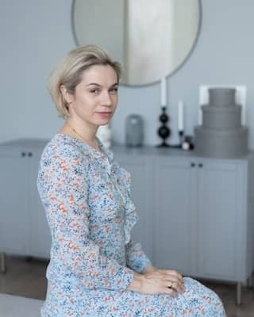
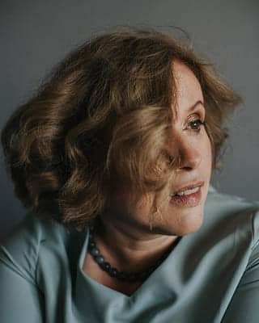
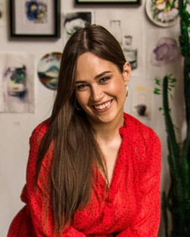
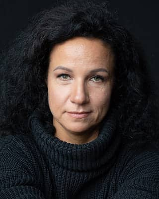
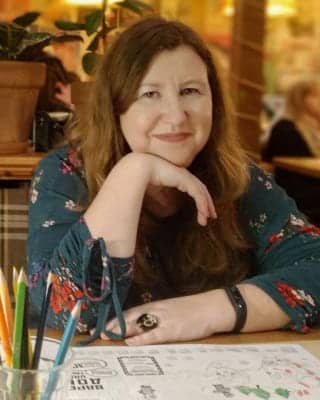
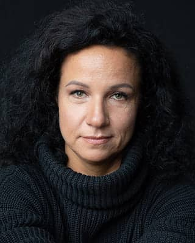

-
31 марта
Регистрация, открытие конференции, лекции и мастер-классы, процесс-группы
-
1-2 апреля
Лекции и мастер-классы, семинары, практикумы, процесс-группы
-
31 марта / 13:30 - 20:006 часов 30 минут
-
 Кандидат психологических наук, семейный психолог, руководитель Балтийского Института Психотерапии, гештальт-терапевт (сертификаты МГИ, EPG), супервизор Европейского реестра, автор ряда книг и учебников по семейной терапииМастерская «Мой мир рухнул…»Посвящена измене как травме отношений и особенностям терапии пары с завершенной изменой. Что считать изменой? Какие есть критерии измен и причины супружеской неверности? Какие измены бывают? И с какими трудностями встречаются психотерапевты в работе с изменами?
Кандидат психологических наук, семейный психолог, руководитель Балтийского Института Психотерапии, гештальт-терапевт (сертификаты МГИ, EPG), супервизор Европейского реестра, автор ряда книг и учебников по семейной терапииМастерская «Мой мир рухнул…»Посвящена измене как травме отношений и особенностям терапии пары с завершенной изменой. Что считать изменой? Какие есть критерии измен и причины супружеской неверности? Какие измены бывают? И с какими трудностями встречаются психотерапевты в работе с изменами? -
 Кандидат психологических наук, доцент, ведущий тренер Республиканского общественного объединения психологов и психотерапевтов «Гештальт Подход» (МГИ). Доцент кафедры психологии Брестского государственного университета имени А.С. Пушкина. Гештальт-терапевт (сертификаты МГИ, EAGT), преподаватель гештальт-терапии, супервизор. Специалист в области клинической психологии и психосоматики, системных семейных расстановок, групповой психотерапии. Действительный член Европейской Ассоциации Гештальт-терапии (EAGT), член правления Белорусской ассоциации психотерапевтов (БАП). Тренер Московского Гештальт Института. Член редколлегии журнала «Псiхалогiя». Автор более 300 научных и научно-методических публикаций в области современной практической психологии и психотерапии, в том числе трех монографий.«Травмы отношений: истоки и проявления в терапии».В лекции будут рассмотрен один из видов эмоциональной травмы – травмы отношений. В фокусе повествования окажутся причины возникновения такого рода травм, их феноменология, механизмы развития, критерии для диагностики, роль значимых других в их формировании. Психологический портрет клиентов-травматиков будет представлен на примере двух видов травм отношений – аннигилляционной травмы и нарциссической травмы.
Кандидат психологических наук, доцент, ведущий тренер Республиканского общественного объединения психологов и психотерапевтов «Гештальт Подход» (МГИ). Доцент кафедры психологии Брестского государственного университета имени А.С. Пушкина. Гештальт-терапевт (сертификаты МГИ, EAGT), преподаватель гештальт-терапии, супервизор. Специалист в области клинической психологии и психосоматики, системных семейных расстановок, групповой психотерапии. Действительный член Европейской Ассоциации Гештальт-терапии (EAGT), член правления Белорусской ассоциации психотерапевтов (БАП). Тренер Московского Гештальт Института. Член редколлегии журнала «Псiхалогiя». Автор более 300 научных и научно-методических публикаций в области современной практической психологии и психотерапии, в том числе трех монографий.«Травмы отношений: истоки и проявления в терапии».В лекции будут рассмотрен один из видов эмоциональной травмы – травмы отношений. В фокусе повествования окажутся причины возникновения такого рода травм, их феноменология, механизмы развития, критерии для диагностики, роль значимых других в их формировании. Психологический портрет клиентов-травматиков будет представлен на примере двух видов травм отношений – аннигилляционной травмы и нарциссической травмы. -
 Кандидат психологических наук, доцент, председатель Республиканского общественного объединения психологов и психотерапевтов «Гештальт Подход». Гештальт-терапевт, групповой терапевт. Семейный психотерапевт, специалист в области системных семейных расстановок и эмоционально-фокусированной терапии супружеских пар. Супервизор (сертификаты МГИ, Парижской школы гештальта). Руководитель секции семейной психологии Белорусского Общества Психологов. Действительный член Европейской Ассоциации Психотерапии (EAP), Европейской Ассоциации Гештальт Терапии (EAGT), Международной Ассоциации Семейной Терапии (IFTA). Автор более 300 научных и научно-методических публикаций в области современной практической психологии и психотерапии, в том числе 5-ти учебников и 2-х учебно-методических пособий по системной семейной терапии.Дискуссия «Любовь и агрессия в семье и в жизни».Мы поговорим о значении любви в жизни каждого человека, о реальных и символических родителях.
Кандидат психологических наук, доцент, председатель Республиканского общественного объединения психологов и психотерапевтов «Гештальт Подход». Гештальт-терапевт, групповой терапевт. Семейный психотерапевт, специалист в области системных семейных расстановок и эмоционально-фокусированной терапии супружеских пар. Супервизор (сертификаты МГИ, Парижской школы гештальта). Руководитель секции семейной психологии Белорусского Общества Психологов. Действительный член Европейской Ассоциации Психотерапии (EAP), Европейской Ассоциации Гештальт Терапии (EAGT), Международной Ассоциации Семейной Терапии (IFTA). Автор более 300 научных и научно-методических публикаций в области современной практической психологии и психотерапии, в том числе 5-ти учебников и 2-х учебно-методических пособий по системной семейной терапии.Дискуссия «Любовь и агрессия в семье и в жизни».Мы поговорим о значении любви в жизни каждого человека, о реальных и символических родителях. -
 Психолог, сексолог, гештальт-терапевт, ведущий тренер Московского гештальт-института, супервизор, член РНСО (Российского Научного Сексологического Общества). Автор оригинальных обучающих программ по сексологии, парному консультированию, терапии зависимостей, телесно-фокусированной работе с сексуальной тематикой. Ведущая групп для женщин с эндокринными и гинекологическими нарушениями, супервизионных групп для сексологов.Доклад "Динамика сексуальности в паре с репродуктивной травмой".Рассмотрим, что такое репродуктивная травма, ее мишени, влияние на взаимоотношения в паре вообще и на динамику сексуальности в частности. Будет предоставлен разбор кейса.
Психолог, сексолог, гештальт-терапевт, ведущий тренер Московского гештальт-института, супервизор, член РНСО (Российского Научного Сексологического Общества). Автор оригинальных обучающих программ по сексологии, парному консультированию, терапии зависимостей, телесно-фокусированной работе с сексуальной тематикой. Ведущая групп для женщин с эндокринными и гинекологическими нарушениями, супервизионных групп для сексологов.Доклад "Динамика сексуальности в паре с репродуктивной травмой".Рассмотрим, что такое репродуктивная травма, ее мишени, влияние на взаимоотношения в паре вообще и на динамику сексуальности в частности. Будет предоставлен разбор кейса. -

Магистр психологических наук, кандидат педагогических наук, доцент. Гештальт-терапевт, супервизор (сертификаты Московского Гештальт Института, Европейской Ассоциации Гештальт Терапии). Ведущий тренер Московского Гештальт Института. Исполнительный директор Республиканского общественного объединения психологов и психотерапевтов «Гештальт Подход». Приглашенный тренер Вильнюсского Гештальт Института, Рижского Центра физической и психологической реабилитации. Семейный психотерапевт. Специалист в области психосоматических расстройств. Действительный член Европейской Ассоциации Гештальт Терапии (EAGT), Международной Ассоциации Семейной Терапии (IFTA).Круглый стол «Любовь и фрустрация».Лекция посвящена балансу любви и фрустрации в парных и терапевтических отношениях.
-
-
1 апреля / 10:00 - 20:0010 часов
-
Магистр психологических наук, кандидат педагогических наук, доцент. Гештальт-терапевт, супервизор (сертификаты Московского Гештальт Института, Европейской Ассоциации Гештальт Терапии). Ведущий тренер Московского Гештальт Института. Исполнительный директор Республиканского общественного объединения психологов и психотерапевтов «Гештальт Подход». Приглашенный тренер Вильнюсского Гештальт Института, Рижского Центра физической и психологической реабилитации. Семейный психотерапевт. Специалист в области психосоматических расстройств. Действительный член Европейской Ассоциации Гештальт Терапии (EAGT), Международной Ассоциации Семейной Терапии (IFTA).Лекция «Кризис идентичности в поляризованном мире».Лекция посвящена .
-
Анастасия Гонта: Кандидат психологических наук. Гештальттерапевт, супервизор, тренер. Ведущая терапевтических и супервизорских групп, групп 1 и 2 ступеней обучения гештальту, семейный психотерапевт и арт-терапевт. Член РОО ОППГП, член EAGT. Приглашенный тренер Вильнюсского, Рижского и Тбилисского гештальт-институтов.Лекция «Арт-технологиии в работе с кризисами и травмами»Психологическая травма – это событие, которое психика человека не способна переработать. Оно вызывает тяжелый психологический стресс, сопровождающийся чувством страха, ужаса и беспомощности. Арт-терапия направлена на формирование стабильного психического состояния путем использования творческого самовыражения и развития способности находить взаимосвязь между восприятием арт-объекта и внутренним состоянием личности.
-
 Психолог, аккредитованный гештальт-терапевт, семейный и кризисный терапевт, сексолог.Мастер-класс «Использование метода ДПДГ/EMDR в практике гештальт- терапевта при работе с травмой»ДПДГ - Десенсибилизация и Переработка Движением Глаз (англ. EMDR - Eye Movement Desensitization and Reprocessing) признан и рекомендован к применению ВОЗ как эффективный метод психотерапии при работе с травмой и ПТСР. EMDR помогает запустить и ускорить естественный механизм переработки негативных событий и переживаний, может быть как самостоятельным методом терапии, так и дополнительным. Уже после одного сеанса EMDR человек может вспоминать травматическое событие более нейтрально и чаще всего уже прекращаются навязчивые образы травматического события. На встрече вы познакомитесь с сутью и механизмом работы метода, основными терминами и со спецификой работы. Вы узнаете как можно интегрировать метод в свою практику, что происходит на сессии, какие есть протоколы работы. Я поделюсь с вами коротким протоколом при работе с травмирующим событием и некоторыми техниками, которые вы сможете попрактиковать уже на мастерской.
Психолог, аккредитованный гештальт-терапевт, семейный и кризисный терапевт, сексолог.Мастер-класс «Использование метода ДПДГ/EMDR в практике гештальт- терапевта при работе с травмой»ДПДГ - Десенсибилизация и Переработка Движением Глаз (англ. EMDR - Eye Movement Desensitization and Reprocessing) признан и рекомендован к применению ВОЗ как эффективный метод психотерапии при работе с травмой и ПТСР. EMDR помогает запустить и ускорить естественный механизм переработки негативных событий и переживаний, может быть как самостоятельным методом терапии, так и дополнительным. Уже после одного сеанса EMDR человек может вспоминать травматическое событие более нейтрально и чаще всего уже прекращаются навязчивые образы травматического события. На встрече вы познакомитесь с сутью и механизмом работы метода, основными терминами и со спецификой работы. Вы узнаете как можно интегрировать метод в свою практику, что происходит на сессии, какие есть протоколы работы. Я поделюсь с вами коротким протоколом при работе с травмирующим событием и некоторыми техниками, которые вы сможете попрактиковать уже на мастерской. -

Системный семейный психолог, нарративный консультант. Сертифицированный эфт-терапевт ( ICEEFT, Канада). Кандидат в супервизоры ICEEFT. Член ICEEFT (The International Centre of Excellence in Emotionally Focused Therapy, http://www.iceeft.com). Член правления Сообщества Эмоционально-Фокусированной Терапии (Россия, Москва). Стаж работы с семьями - 10 лет. Стаж работы с парами в эмоционально-фокусированной терапии - 9 лет. Психолог и преподаватель Центра Системной Семейной Терапии Инны Хамитовой. С 2016 года – терапевт-помощник в международных учебных программах по эмоционально-фокусированной терапии (ICEEFT, Канада, тренер Зоя Симаходская). С 2017 года - автор и ведущий тренингов для профессионалов «Эмоционально-фокусированная терапия: работа с Метафорами», «Работа с агрессивным и унижающим поведением в парах», «ЭФТ: особенности работы с изменами в парах». С 2018 года - соавтор и ведущий клиентского тренинга для пар «Hold me tight — Moscow: Обними меня крепче». С 2020 года – ведущая супервизорской группы «10 шагов к Сертификации в ICEEFT.Работа с ранами привязанности
-
Врач-психиатр-нарколог, гештальт-терапевт, ведущий терапевтических и обучающий групп.Круглый стол "Искушения терапевта".Терапевтическая ситуация, особенно, если речь касается тяжело травмированных клиентов, часто располагает к возникновению не осознаваемых ни клиентом, ни терапевтом феноменов. К ним можно отнести проективную идентификацию, создание психических убежищ, включение терапевта в разыгрывание идеализации и ощущение им своей грандиозности и всемогущества, своей исключительной роли в жизни клиента. Я приглашаю вас в коллегиальной и поддерживающей среде подискутировать на эту тему, поисследовать собственную практику на предмет наличия данных феноменов, подумать как распознать эти ситуации и что делать, если обнаружил себя там, где оказываться не собирался.
-
Юлия: кандидат психологических наук, доцент кафедры общей и медицинской психологии Белорусского государственного университета, системный семейный терапевт, специалист в области работы с семьями, супружескими парами, детско-родительскими отношениями. Ведущая авторских курсов для студентов и магистрантов: «Психология семьи», «Семейное консультирование», «Психология родительства и семейных кризисов».Вадим: практикующий психолог, специализируется на работе с семейными вопросами, а также с наркозависимыми и ВИЧ-положительными клиентами. Ведущий семинаров, мастер-классов, тренингов. Тренер цигун.Мастер-класс "Опора привязанности в период кризиса отношений".Очевидно все пары проходят через кризисы отношений. Часто это риск, ведь испытанию подвергается эмоциональная связь и привязанность партнеров как фундамент отношений. На мастер-классе мы поможем нащупать опору привязанности в отношениях, что даст знания о Вашей силе и ресурсах для проживания и преодоления кризиса.
-
Гештальт терапевты, семейные психологи Сергей и Таша Петровы.Мастер-класс «Ресурсы проживания личностных и семейных кризисов в паре»В процессе жизни у пары, как у системы и у каждого из партнеров в отдельности случаются кризисы. Эти кризисы проживаются по разному и судя по статистики расставаний, далеко не всегда успешно. Мы предлагаем вам ознакомиться с тем, как можно использовать ресурс пары для успешного преодоления актуального кризиса как индивидуального, одного из партнеров, так и кризиса самой пары (семьи). На мастер-классе покажем и расскажем вам в чем состоит этот ресурс и как им можно эффективно пользоваться.
-
Гештальт-терапевт, супервизор, ассоциированный тренер. Ведущая обучающих, супервизорских, терапевтических групп и специализаций. Член Общества Практикующих Психологов «Гештальт Подход» (ОПП ГП). Специализации: работа с сексуальными и семейными проблемами, кризисы и травмы, психотерапия зависимого поведения.Доклад «Линейная и нелинейная модели оказания психологической помощи в ситуации переживания утраты.»СМЫСЛ ДОКЛАДА: раскрыть ограничения линейной модели оказания психологической помощи в ситуации чрезвычайно значимой утраты, когда суть терапии сводится к линейному процессу перехода от контакта с умершим к полному завершению взаимоотношений с ним. Вместо линейности предлагается рассматривать определенную терапевтическую цикличность этого процесса, которая позволяет человеку адаптироваться к ситуации утраты более гибко и сделать ее более ресурсной. Обоснованием является понимание того, что значимые отношения не могут быть завершены никогда, но могут быть реорганизованы и переосмыслены конструктивным образом, однако это может быть достигнуто не в рамках линейных моделей, но в рамках новых моделей ("Дуальная модель процесса", "Модель незавершенности")
-

Врач-психотерапевт, семейный системный терапевт, EMDR-терапевт, базовый консультант ППТ, КПТ. Специализации по работе с кризисами и травмами в гештальт-подходе, репродуктивной психотерапии, арт-терапии. Занимается психологическим сопровождением онкологических пациентов и их близких, эмоциональным выгоранием врачей-онкологов и развитием навыков эффективной коммуникации в медицинской среде.Мастер-класса «Близкие онкопациентов: параллельная жизнь»Речь используется далеко не во всех коммуникациях, так, например, бессознательное может вести с нами беседу через «симптом». Это психический, поведенческий или психосоматический феномен, который может создавать сложности как самому человеку, так и его окружению. Во время мастер-класса я предложу серию вопросов, которые помогают исследовать как «симптом» представлен в жизни и почему он всё ещё существует. Можно использовать для себя или внедрить в практику для клиентов. Когда близкий болен онкологическим заболеванием: параллельная жизнь. Известие о диагнозе вносит существенные изменения в течение и организацию жизни не только онкологического пациента, но и его семьи, его окружения. Большинство близких онкопациентов, переступая порог моего кабинета, задаются вопросом «как лучше всего помочь своему родственнику, любимому, другу?», однако нечасто обращают внимание на то, в каком состоянии находятся сами и редко приходят за поддержкой для себя. По данным многих исследований, окружение онкопациента проживает аналогические стадии принятия болезни, имеет повышенный риск депрессии и часто сталкиваются с канцерофобией в дальнейшем. Я бы хотела уделить внимание тем чувствам и процессам, которые переживают близкие болеющего раком, а также расскажу о рекомендациях из своей практики, которые помогают жить рядом, а не вместо болеющих близких.
-
Аккредитованный гештальт-терапевт, учащаяся 3 ступени, групповой терапевт, семейный и репродуктивный психолог.Мастер-класс «Дочь отсутствующего отца»Как влияет на взросление девочки отсутствие отца? И что можно считать отсутствием: отца не было изначально, он ушёл из семьи в определенном возрасте ребёнка или все детство прожил рядом, но не включался эмоционально в жизнь дочери? Может ли отсутствие отца в детстве оказывать влияние на взрослую жизнь женщины? Стоит ли с этим фактом жизни связывать низкую самооценку, невозможность строить отношения, продвигаться по карьерной лестнице? Или все же нет? Меня, как дочь отца и маму дочерей, очень интересует эта тема. Приглашаю вас к исследованию ее вместе.
-
-
2 апреля / 10:00 - 17:307 часов 30 минут
-

Магистр психологических наук, член Профсовета Республиканского общественного объединения психологов и психотерапевтов «Гештальт Подход», член Европейской Ассоциации Гештальт Терапии (EAGT). Гештальт-терапевт, супервизор, ведущий тренер Московского Гештальт Института, специалист в области травматологии, техник работы со сновидениями, семейной и сексуальной терапии. Автор научных и научно-методических работ в области современной практической, семейной и юридической психологии.Лекция «Особенности гештальт-терапии в работе с комплексным ПТСР»О феноменах травмированного Self и стратегиях гештальт-терапии при к-ПТСР. Восстановление Self-регуляции и границ травмированного Self.
-
Основатель и ректор Университета Современной Психологии Натальи Жуковой, магистр психологических наук (МГУ им. Ломоносова), аккредитованный и сертифицированный в России и Европе гештальт-терапевт, когнитивно-поведенческий терапевт (City, University of London), самый цитируемый специалист по созависимости в России, создатель психологического центра, автор блога с аудиторией свыше 140 000 человек. Психолог, За 4 года ее курсы прошли более 21 000 человек. Обучалась на программах Moscow School of Management SKOLKOVO, Executive-коучинг SKOLKOVO, EMBA SKOLKOVO Опыт работы психологом 13 лет. Регулярные супервизии и личная терапия более 14 лет.Кризис идентичности начинающего психолога.В любой деятельности однажды наступает момент перехода из обучения в практику. Так же и в практике психолога: однажды из позиции ученика вы переходите в позицию практика. Возможно, сейчас вы проживаете значимый период вашего профессионального развития, и во многом он даже может быть определяющим – влияющим на дальнейшую практику, на то, как вы в качестве специалиста будете себя в ней ощущать. Поэтому важно относиться к себе с особенным вниманием, заботой и поддержкой. И, конечно, справляться со страхами, которые буквально пронизывают этот переходный период. Переход к началу практики пробуждает большие личностные кризисы и перестановки, часто связан с интенсивным процессом самоанализа. Происходит активный поиск ответов на вопросы: «кто я – могу ли я себя называть психологом/психотерапевтом?», «как мне предъявлять себя этому миру?», «чего я хочу от своей работы?» и т.д. На конференции Наташа Жукова поделится, какие страхи имеют место быть у начинающего психолога, и методами, позволяющими с ними бороться. Эти страхи напрямую связаны с доходом психолога и сильно мешают развиваться в профессиональном плане. От подобных предрассудков важно не только правильно избавляться, но и понимать, что за ними стоит.
-
 Психолог, гештальт- терапевт, супервизор, ассоциированный тренер МГИ, Магистр психологии, специализации: Арт терапия, Семейная терапия, работа с психосоматикой, оргконсультирование и коучинг в гештальт подходе, групповая психотерапия.«Проживание горя».Сложные переживания утраты могут вытесняться. В стремлении к жизни мы можем уходить от переживаний грусти, горевания, благодарности и других сложных чувств. Эта мастерская будет посвящена не только утрате близкого, но и утрате отношений или потере возможностей. О таких переживаниях сложно говорят, чаще всего их избегают. В этой мастерской мы сможем найти варианты разговора. Это могут быть слова, или другие арт материалы, в которых вы сможете говорить о важном без слов.
Психолог, гештальт- терапевт, супервизор, ассоциированный тренер МГИ, Магистр психологии, специализации: Арт терапия, Семейная терапия, работа с психосоматикой, оргконсультирование и коучинг в гештальт подходе, групповая психотерапия.«Проживание горя».Сложные переживания утраты могут вытесняться. В стремлении к жизни мы можем уходить от переживаний грусти, горевания, благодарности и других сложных чувств. Эта мастерская будет посвящена не только утрате близкого, но и утрате отношений или потере возможностей. О таких переживаниях сложно говорят, чаще всего их избегают. В этой мастерской мы сможем найти варианты разговора. Это могут быть слова, или другие арт материалы, в которых вы сможете говорить о важном без слов. -
Кандидат психологических наук, доцент, практикующий психолог, гештальт-терапевт, супервизор, ассоциированный тренер МГИ; автор 130 публикаций, включая 3 монографии по проблемам теоретической и практической психологии, в сферу профессиональных интересов входят теоретические и практические вопросы игрового переживания.Лекция «Игровое переживание и идеалы психологической помощи».Анонс: Психологическая помощь – это деятельность, которая подчинена какому-то замыслу, или цели. В самом широком смысле психолог пытается содействовать человеку в организации «хорошей» жизни. Существует много идеалов психологического здоровья и психологического благополучия, «хорошей» жизни (осознавание, самоактуализация, самореализация, самость, социальный интерес, переживание потока, сильное Я, переживание смысла, «благоговение перед жизнью», творческое приспособление, культурно-продуктивная личность, др.). Предлагаю дополнить этот перечень: игровое переживание, которое наполняет человека особым (вовлеченным, заинтересованным, свободным) характером обращения с реальностью и с самим собой. В таком переживании – не просто основа качественной жизни, но и – профилактика психосоматических заболеваний, отчуждения, скуки, депрессии и отчаяния – всего того, что ведёт к деструктивности, разрушающему или саморазрушающему поведению. В лекции будет представлена сущность и феноменология игрового переживания, его генезис и возможности развития в психотерапевтическом процессе.
-
 Психолог, гештальт-терапевт, супервизор, ассоциированный тренер. Специалист по работе с кризисами и травмами, сексуальными дисфункциями и гетероненормативными клиентами, телесно-ориентированный терапевт. Член Республиканского общественного объединения психологов и психотерапевтов «Гештальт Подход».Лекция «Феномен сексуального насилия. Специфика работы с жертвами сексуального насилия».Сексуальное насилие – одна из самых сложных тем в работе с клиентами. Редкий клиент приходит с ней в терапию. Часто эта тема открывается неожиданно как для самого клиента, так и для психолога. Важно, чтобы специалист был подготовлен к этой работе и знал основные принципы работы с этой деликатной темой. В свой лекции я расскажу про феномен сексуально насилия и опорные точки в работе с клиентами, подвергшимися ему. Приглашаю практикующих коллег и тех, кому знакома эта тема. Будем вместе разбираться и повышать компетенции.
Психолог, гештальт-терапевт, супервизор, ассоциированный тренер. Специалист по работе с кризисами и травмами, сексуальными дисфункциями и гетероненормативными клиентами, телесно-ориентированный терапевт. Член Республиканского общественного объединения психологов и психотерапевтов «Гештальт Подход».Лекция «Феномен сексуального насилия. Специфика работы с жертвами сексуального насилия».Сексуальное насилие – одна из самых сложных тем в работе с клиентами. Редкий клиент приходит с ней в терапию. Часто эта тема открывается неожиданно как для самого клиента, так и для психолога. Важно, чтобы специалист был подготовлен к этой работе и знал основные принципы работы с этой деликатной темой. В свой лекции я расскажу про феномен сексуально насилия и опорные точки в работе с клиентами, подвергшимися ему. Приглашаю практикующих коллег и тех, кому знакома эта тема. Будем вместе разбираться и повышать компетенции. -
Магистр психологических наук (БГПУ имени Максима Танка), психолог, детский психолог, Гештальт терапевт (сертификаты МГИ), аккредитованный Гештальт-терапевт и супервизор EAGT, преподаватель, куратор и ведущая специализации «Гештальт-подход в работе с детьми и семьей.Мастер класс с элементами лекции «Этапы прохождения кризиса: работа с метафорой»Кризис как процесс переживания понимается как поворотный пункт в реализации своего жизненного пути, внутреннего замысла своей жизни (Ф. Василюк). Как любой процесс кризис имеет начало - развитие - кульминацию и завершение. На протяжении жизни каждый из нас сталкивается с рядом кризисов, начиная с кризисов развития, связанных с переходом от одного возрастного периода к другому и сопровождающимися преобразованием личности, семейными кризисами, и к сожалению, никто не застрахован от переживания кризисов возникающих в ответ на психотравмирующую ситуацию. В рамках данного мастер класса мы поговорим о кризисах, которыми пронизана наша жизнь. На примере экранизации одноименного романа “Бесконечная история” познакомимся со стадиями проживания травматического кризиса, познакомимся с терапевтическими методиками, которые метафорически отражают путь который предстоит пройти психики с целью укрепления уверенности в том, что даже самые тяжелые события имеет свое начало и завершение. Необходимыке материала: плотная бумага, средства для рисования, толстая нитка и иголка.
-
 Максим: магистр психологии, аккредитованный гештальт терапевт и супервизор МГИ, групповой терапевт, действующий член EAGT, ассоциированный тренер, Автор и программный руководитель реабилитационного центра РЦ «Феникс», автор курса и ведущий специализации «Зависимость и созависимость: интегратианый гештальт-подход». Опыт работы с зависимыми по 12-ти шаговой программе с 2005 г.Мария: магистр психологических наук, аккредитованный гештальт терапевт и супервизор МГИ, групповой терапевт, ассоциированый тренер, психолог реабилитационного центра «Феникс», автор и ведущая специализации «Зависимость и созависимость: интегратианый гештальт-подход»Круглый стол «Абьюз: феноменология, виды, психологическая помощь».Зачастую созависимость воспринимается как проявление любви, а проявление любви может выглядеть как созависимость. На нашем МК мы поможем вам разобраться в этих понятиях.
Максим: магистр психологии, аккредитованный гештальт терапевт и супервизор МГИ, групповой терапевт, действующий член EAGT, ассоциированный тренер, Автор и программный руководитель реабилитационного центра РЦ «Феникс», автор курса и ведущий специализации «Зависимость и созависимость: интегратианый гештальт-подход». Опыт работы с зависимыми по 12-ти шаговой программе с 2005 г.Мария: магистр психологических наук, аккредитованный гештальт терапевт и супервизор МГИ, групповой терапевт, ассоциированый тренер, психолог реабилитационного центра «Феникс», автор и ведущая специализации «Зависимость и созависимость: интегратианый гештальт-подход»Круглый стол «Абьюз: феноменология, виды, психологическая помощь».Зачастую созависимость воспринимается как проявление любви, а проявление любви может выглядеть как созависимость. На нашем МК мы поможем вам разобраться в этих понятиях. -
Магистр психологических наук, гештальт-терапевт, системный семейный терапевт, групповой психотерапевт.Круглый стол "Седина в бороду – бес в ребро."Этот кризис ещё называют кризисом 40-ка, но это очень условно. Его принято считать очень глубоким и экзистенциальным, самым жёстким из всех нормативных возрастных кризисов после пубертатного. Это тот самый "момент", о котором в народе говорят: "Седина в бороду – бес в ребро." Когда накоплен значительный жизненный опыт и начинается "подведение итогов"... Подведём итог? Поразмышляем? Приглашаю обсудить это)
-

Сертифицированный гештальт - терапевт, обучаюсь на третьей ступени МГИ. Магистр психологии, аспирант кафедры социальной и семейной психологии БГПУ им. М. Танка, семейный психолог, спортивный психолог, специалист по работе с кризисами и травмами. Автор более 15 научных публикаций.Виды агрессии как ресурс в проживании кризисаНа языке теории поля, кризис - несоответствие между потребностями организма и возможностями окружающей среды. Опасности любого кризиса связаны с регрессом, а возможности - с прогрессом. Преодоление кризиса возможно при соответствии ожиданий от окружающей среды и возможностей организма. Агрессия, как эмоциональная энергия, является возможностью творческого приспособления к контакту с окружающим миром для личностного роста и развития. Каким образом разрушительная агрессия преобразовывается в ресурс, а её энергия направляется на контакт с предметом удовлетворения потребности, разберем на сегодняшней лекции, опираясь на примеры из практики.
-
Телесно-ориентированный гештальт-терапевт, супервизор, тренер МГИ«Апатия, бессилие, тяжесть, потеря интереса и желаний - что с этим делать. Ответы и ресурсы в нашем теле»Во время лекции поговорим о том: - КАК чувства, эмоции и эмоциональные состояния связаны с телесностью - ЧТО скрывают в себе апатия и бессилие и где они живут в теле - КУДА уходят желания и интерес к себе и жизни А также, я дам телесные практики, которые помогут вернуть клиенту ресурс, опоры и энергию в тело. Ведь работа с телом приводит к изменению эмоционального и психологического состояния
-
